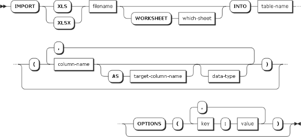

IMPORT XLS
Statement
Imports an Excel worksheet (in either .XLS or .XLSX format) from disk into a notebook table. This statement is the scripting equivalent of the visual import wizard accessed via the Import menu. If the workbook contains multiple worksheets, use the which-sheet argument to specify which worksheet to import. If needed, use the LIST_XLS_WORKSHEETS function to get a list of the worksheets in the workbook.

.XLS
or .XLSX) to be imported.TRUNCATE_EXISTING_TABLE
option can be used to overwrite the existing table data. TEXT: The input is imported
without change (default)INTEGER: A positive or
negative integerREAL: Any numeric valueDATE: Best-effort conversion
into the text format: "YYYY-MM-DD"DATETIME: Best-effort
conversion into the text format: "YYYY-MM-DD hh:mm:ss.sss"DATETIMEOFFSET: Best-effort
conversion into the text format: "YYYY-MM-DD hh:mm:ss.sss +ZZ:ZZ"FIRST_ROW
(integer ≥ 1, default: 1)HEADER_ROW
option), FIRST_ROW specifies the row
containing the column names, with the data to follow on the next row.
If no column names are present, then FIRST_ROW
specifies the first row of data.LAST_ROW
(integer ≥ 0, default: 0)FIRST_COLUMN
(integer ≥ 1 or string, default: 1)LAST_COLUMN
(integer ≥ 0 or string, default: 0)FIRST_COLUMN)
are imported.HEADER_ROW (0
or 1, default: 1)SKIP_LINES option to indicate how
many lines to skip before the column header appears.
column1,
column2, etc. will be used.TRUNCATE_EXISTING_TABLE
(0 or 1, default: 0)TEMPORARY_TABLE
(0 or 1, default: 0)CREATE TABLECREATE TEMPORARY TABLEIF_CONVERSION_FAILS
(integer 1-3, default: 1)IMPORT CSV
statement as INTEGER), this option controls
what happens.
IMPORT XLS 'C:\Workbook.xls' INTO mytable;mytable.
Because no options are specified, it is assumed that the file has a
column header on the first line. Because no column list is specified,
all columns are imported as text and the original column names are
preserved.IMPORT XLSX 'C:\Workbook.xls' INTO tbl1; IMPORT XLS 'C:\Workbook.xlsx' INTO tbl2;XLS and XLSX
are interchangeable and need not match the file's actual extension.IMPORT XLS 'C:\Workbook.xls' WORKSHEET 1 INTO
tbl1;IMPORT XLS 'C:\Workbook.xls' WORKSHEET 'Sheet1'
INTO tbl1;IMPORT XLS 'C:\Workbook.xls' INTO mytable
(foo,
bar);foo, bar) are explicitly
specified. If the source file contains other columns besides those two,
then they are not imported into the destination notebook table. If the
source file does not contain the specified columns, then the import
fails. If the destination table already exists and does not contain the
specified column names, then the import fails. IMPORT XLS 'C:\Workbook.xls' INTO mytable
(foo
AS aaa, bar AS bbb);foo, bar) and target
columns (aaa, bbb)
are explicitly specified. IMPORT XLS 'C:\Workbook.xls' INTO mytable
(foo
TEXT, bar INTEGER);bar column), by default the
value is imported as text. SQLite treats column types as suggestions,
so the integer column can contain a text value. IMPORT XLS 'C:\Workbook.xls' INTO mytable
(column1 AS foo, column2 AS bar) OPTIONS (HEADER_ROW: 0);IMPORT XLS @filename INTO @tablename
(@old_col AS @new_col);IMPORT XLS are provided
in variables rather than using literal strings. This allows these names
to be dynamically generated or otherwise determined at script runtime.